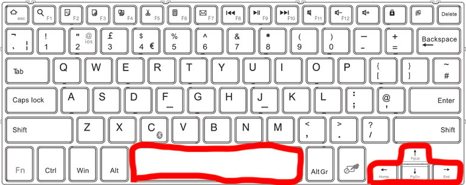

Instructions for Robot Runner
Goal of the game:
The goal of the game is to score as many points as possible. Points are accrued when you run with the robot without colliding with obstacles, ie the farther you run, the more points you get.
If you run into an obstacle, the game ends. However, you can dodge obstacles by moving to the right or left. It is also possible to jump over an obstacle.
Keypad:
The robot moves using the arrow keys on the keyboard and the space bar. Use the arrow keys to move the robot to the right, left and jump.
The robot jumps from the up arrow or space bar.
These keys are marked in red in the figure.
